Blender Beginner for Beginner Tutorial: Mech Model Part 1: Modelling
26th May 2010 - Blender 2.47
I decided to move away from historical models for this tutorial. I chose a mecha, a walking robot, as an exercise in texturing, rigging and animation. The idea is to first create a low-poly model so that most of the visual detail is in the textures applied. Then a walk cycle will be animated using bone rigging to aid further animations. The result will be the sort of model that could be used in a simple game. As there are quite a few steps in achieving all of this, the tutorial has been split into four parts. This first part creates the base model. Following posts will cover texturing, rigging and animating.
- Mech Model Part 1: Modelling
- Mech Model Part 2: Texturing
- Mech Model Part 3: Rigging
- Mech Model Part 4: Animating
-
Centre the cursor (SHIFT-C), use a top-down view (NUMPAD7) and create a
circle (SPACE key, choosing Add -\> Mesh -\> Circle) 6 vertices and
radius 1. A hexagon is drawn - this will become the foot of the mech.
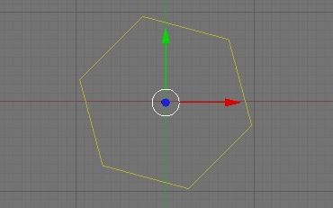 -
Select the circle and go into edit mode (TAB), extrude (E KEY) the edges
up 0.5 in the Z axis to create the volume of the foot.
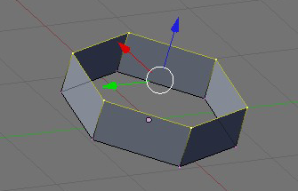 -
Switch to face select mode (CTRL-TAB and select the Faces option) and
select one of the faces. Go into top view (NUMPAD7) and extrude (E KEY)
the face 1.5 (this should be performed in the XY plane). Then with the
newly extruded face selected, scale 0.6 in the X (S then X key then 0.6)
and then 0.6 in the Y (S then Y key then 0.6). Do the same for two more
neighbouring faces of the original hexagon. These will be the toes of
the mech’s foot.
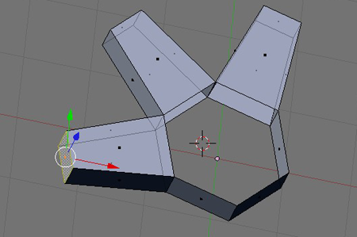 -
Close up the base of the foot, by selecting 3 or 4 consecutive points on
the base of the hexagon (you will have to go back to vertex select mode
- CTRL-TAB and the Vertices option) and using F KEY to form a face.
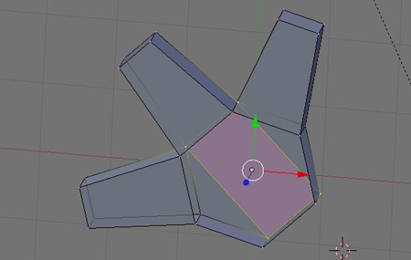 -
Now to close up the top of the foot. Go into edge select mode (CTRL-TAB
and select the Edges option) and select the edge at the top of the
hexagon directly opposite the middle toe. Extrude it up in the Z axis
0.5 (this will be the ankle) and then close up the top of the foot by
selecting vertices and forming faces with the F KEY.
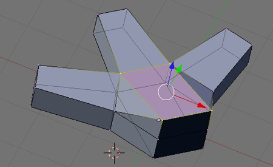 -
Create a cylinder (SPACE key, choosing Add -\> Mesh -\> Cylinder)
uncapped with 6 vertices, length 7 and radius 0.05. Angle it slightly
(with the R key to rotate, probably just on a single axis - the Y axis
for me) and position it so the base is hidden in the foot (using G for
grab). This is the lower leg.
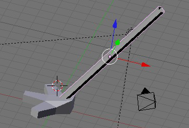 -
Using side view (NUMPAD1) is good for this step. Create a cyclinder with
32 vertices, radius 1, depth 1 and capped. Smooth the curved part of the
cylinder (by selecting all the faces in the curve and then pressing “Set
Smooth” on the “Link and Materials” subpanel of the Editing panel. Place
the cylinder at the end of the lower leg - this is the knee. Next the
upper leg. Create another cylinder, 6 vertices, uncapped, radius 0.5
with a length, angle and position such that it joins the knee at its
base and angles up back along the line of the lower leg finishing
roughly above the foot. Now a single leg is complete.
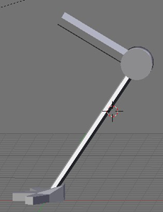 -
Join the meshes comprising the leg together by selecting them all and
using CTRL-J. Move the leg off centre and then duplicate it with SHIFT-D
so there are two legs - make sure they are in the same position except
being mirrored across the Y axis.
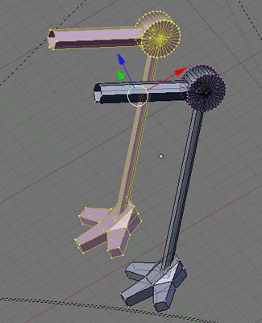 -
Create a capped cylinder with 32 vertices, radius 1. Smooth it, then
scale it to a length long enough to span both upper legs and position it
as shown below. This will be the hip.
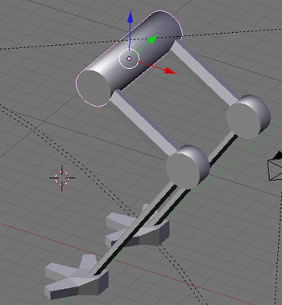 -
Create a cube and transform it to dimensions x=1.5, y=4, z=2 and then
move it so the centre is the same as the hips in X and Y axes with it
slightly higher in the Z axis - this is where the hips/legs will attach
to the body.
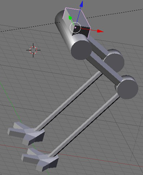 -
Create a capped cylinder with radius 3, 36 vertices and a depth of 5.
Move so that it sits directly in front of the hips and scale it in down
the vertical (Z) axis to 4.5 diameter creating an oval. This will become
the body of the mech.
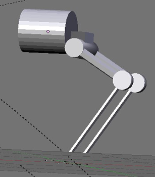 -
Select the cylinder, go into edit mode and select only the front faces
(those of the end of the cylinder furthest from the hips). Scale it down
0.25 (to create something like a nose) in all axes. Select all the side
faces below the midline and delete them. Do the same to the back end.
The cylinder should look like the example on the left. Next the cylinder
needs to be closed up again. In vertex select mode, select the bottom
point of the front end, and the mid point and one neighbouring side
point of the back end, fill a triangle. Do the same with the other side.
Then create faces from each neighbouring pairs of points along the front
end with the back end point on the same side until the cylinder is
closed up again - like the picture on the right.
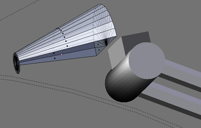 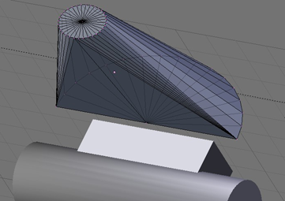 -
Extrude the back faces until they extend past the hip attachment, thus
attaching the body to the hip.
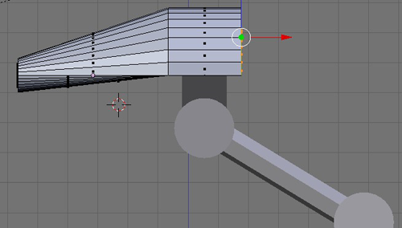 - Optional cheat. I wanted to keep the polygon count low, but during the texturing stage the hard edges on the circular parts (nose, hips and knees) looked too exact and I couldn’t fix this with normal maps. In the end I decided to bevel these edges. Select one edge in the circle, then edge loop select (RMB on one edge while the ALT key is pressed and the whole circle of edges should be selected) then W KEY and choose Bevel, enter a value of 0.01 and enter. It just softens the edge by creating another edge right next and parallel to it.
- Play around and set smooth on the faces to your satisfaction. Then select all the meshes and joining them together with CTRL-J.
And the basic model is complete! You can download the blend file here. The next stage is to texture the mech and the tutorial for that is here.

Mech
Model Blender Model by
Charles
Cordingley is licensed under a
Creative
Commons Attribution 2.0 UK: England & Wales License.